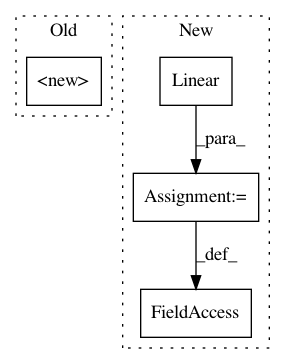

a6b44e72b7d58bc07e1cc0a9fa9fe0413fba57a1,examples/pytorch/gcmc/model.py,DenseBiDecoder,__init__,#DenseBiDecoder#Any#Any#Any#Any#,364
Before Change
num_classes,
num_basis=2,
dropout_rate=0.0):
super(DenseBiDecoder, self).__init__(in_units,
num_classes,
num_basis,
dropout_rate)
def forward(self, ufeat, ifeat):
Forward function.
After Change
self._num_basis = num_basis
self.dropout = nn.Dropout(dropout_rate)
self.P = nn.Parameter(th.randn(num_basis, in_units, in_units))
self.combine_basis = nn.Linear(self._num_basis, num_classes, bias=False)
self.reset_parameters()
def reset_parameters(self):
for p in self.parameters():
In pattern: SUPERPATTERN
Frequency: 3
Non-data size: 4
Instances
Project Name: dmlc/dgl
Commit Name: a6b44e72b7d58bc07e1cc0a9fa9fe0413fba57a1
Time: 2020-08-11
Author: coin2028@hotmail.com
File Name: examples/pytorch/gcmc/model.py
Class Name: DenseBiDecoder
Method Name: __init__
Project Name: rusty1s/pytorch_geometric
Commit Name: 2dd4aa0abf65eb0793e007dacba8a32555a73345
Time: 2019-07-16
Author: matthias.fey@tu-dortmund.de
File Name: torch_geometric/nn/pool/edge_pool.py
Class Name: EdgePooling
Method Name: __init__
Project Name: jalola/improved-wgan-pytorch
Commit Name: fc8951bbd36b14099e41fe171ab57e9f3937fe4f
Time: 2018-05-08
Author: waterstorm64@gmail.com
File Name: models/wgan.py
Class Name: LayerNorm
Method Name: __init__